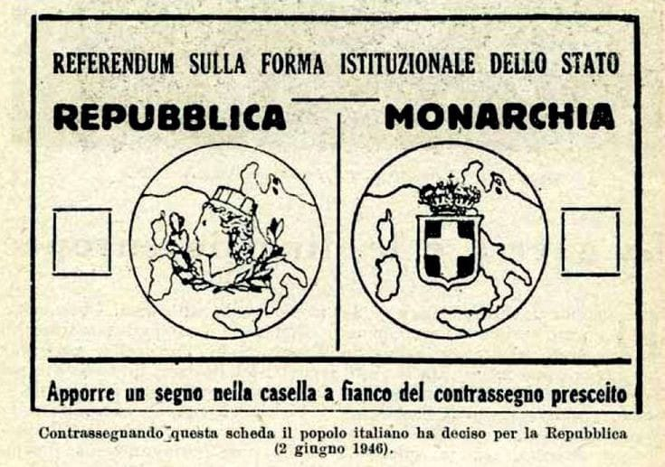

LA NASCITA
La Repubblica Italiana nasce nel 1946, a seguito del referendum istituzionale del 2 e 3 giugno dello stesso anno. Primo referendum
di un’Italia uscita distrutta e lacerata dalla Seconda Guerra Mondiale e dalla dittatura fascista chiamata a scegliere la forma istituzionale
dello Stato. Un referendum in cui per la prima volta votarono anche le donne a seguito del riconoscimento del suffragio universale avvenuto nel
febbraio 1945.
Il referendum vide prevalere la Repubblica, che ricevette il 54,3% di voti, mentre la Monarchia raggiunse il 45,7%.
Il 2 giugno 1946 i cittadini italiani furono chiamati alle urne anche per eleggere i componenti dell’Assemblea Costituente che aveva il
compito di redigere la nuova Carta costituzionale. Dopo il ventennio fascista e la Seconda Guerra Mondiale, l’Italia diventava per volontà
popolare una Repubblica. Enrico De Nicola fu eletto primo presidente.
IL REFERENDUM
Il 16 marzo 1946 il principe Umberto di Savoia annunciò, come previsto dall’accordo firmato due anni prima, che la forma istituzionale dello
Stato sarebbe stata decisa direttamente dai cittadini, chiamati ad esprimere la propria scelta tramite un referendum.
Nel corso dell’intera giornata del 2 giugno e la mattina del 3 giugno 1946 ebbe luogo il referendum per poter scegliere tra Monarchia e
Repubblica italiana. I seggi furono affollatissimi, l’affluenza alle urne imponente. Avevano diritto al voto 28
milioni di cittadini, i votanti furono poco meno di 25 milioni. Circa l’89,08% degli italiani aventi diritto al voto andò alle urne:
il totale di schede valide furono 23 milioni 473 mila 143.
Non tutti i cittadini italiani poterono votare infatti coloro che si trovavo ancora fuori del territorio nazionale al momento
della chiusura delle liste, coloro che vivevano nei campi di prigionia all’estero oppure i cittadini delle province di Bolzano,
Gorizia, Trieste, Pola, Fiume e Zara, ancora oggetto di contesa internazionale, non poterono votare.
I RISULTATI
Il conteggio delle schede avvenne a Roma, nella Sala della Lupa del Palazzo di Montecitorio, oggi sede della Camera dei deputati.
Erano due gli addetti al conteggio delle schede: uno annotava i voti per la Monarchia e uno quelli a favore della Repubblica. Entrambi
erano dotati di una calcolatrice, ma tenevano comunque una seconda conta anche a mano.
Il 10 giugno 1946, la Corte suprema di Cassazione comunicò i primi risultati del referendum. Solo il 18 giugno però, emise l’esito definitivo
e proclamò la vittoria della Repubblica.
- Repubblica: 12.717.923 voti, equivalenti al 54,3%.
- Monarchia: 10.719.384 voti, equivalenti al 45,7%.
- Nulli: 1.498.136 voti.
L’Italia apparve drammaticamente divisa in due: il Nord votò per il 66% a favore della Repubblica, mentre al Sud vinse
la Monarchia con il 63%.